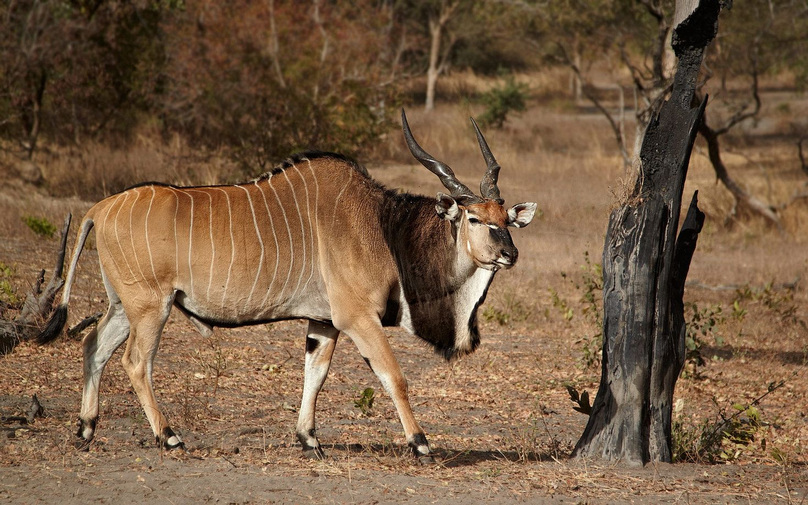
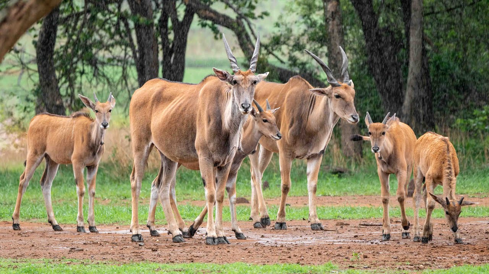
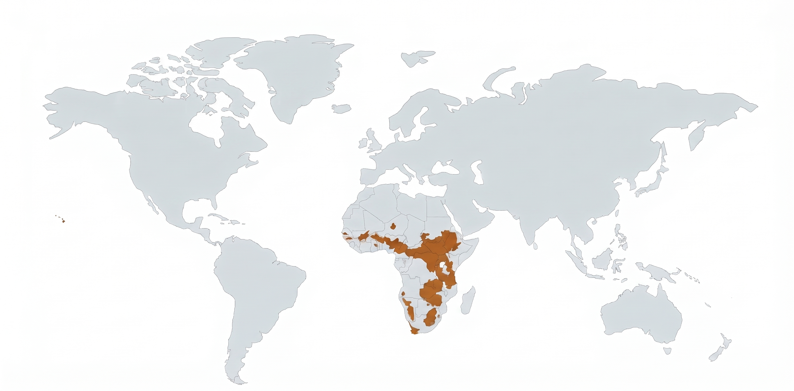

Elande
Taurotragus oryx
O elande (Taurotragus oryx), também conhecido como elande-do-cabo, é o maior e mais pesado antílope do mundo, combinando um porte imponente com uma surpreendente agilidade. Apesar da sua aparência robusta que se assemelha à de um bovino de grande porte, destaca-se pela sua pelagem de tom acastanhado ou cinzento-azulado, finas listras verticais no dorso e magníficos chifres espiralados retos presentes em ambos os sexos. Dotado de uma papada proeminente sob o pescoço que ajuda na regulação da temperatura corporal, este animal alia uma presença majestosa a uma capacidade notável de adaptação a diferentes tipos de paisagens abertas.
Habitat Natural

O elande habita preferencialmente zonas de savana aberta, pastagens extensas, bosques arbustivos e regiões montanhosas áridas ou semi-áridas do sul e leste do continente africano. Ao contrário de outras espécies de antílopes que dependem de fontes permanentes de água doce, o elande consegue obter grande parte da humidade de que necessita diretamente através do consumo de folhagem suculenta, o que lhe permite prosperar em áreas mais secas. Movem-se frequentemente em manadas fluidas que podem variar desde algumas dezenas até centenas de indivíduos durante as migrações sazonais.
Dieta
O elande é um herbívoro ruminante de dieta mista e versátil, com uma forte preferência pelo pastoreio de rebentos arbustivos, folhas, flores e caules tenros. Embora consuma uma quantidade considerável de erva fresca, especialmente após as chuvas, a maior parte da sua alimentação diária é composta por folhagem de árvores e arbustos de altura média, utilizando os seus longos chifres para puxar os ramos mais altos para baixo. Esta flexibilidade alimentar permite-lhe aproveitar recursos que outras espécies ignoram.
Curiosidades
- Apesar do seu peso colossal que pode ultrapassar os 900 quilos nos machos mais velhos, os elandes são saltadores excecionais, capazes de transpor facilmente barreiras de até dois metros de altura a partir de uma posição parada.
- Produzem frequentemente um som de clique distinto ao caminhar, que se acredita ser gerado por um tendão ou articulação dos joelhos ao esticar as patas traseiras.
Os nossos Elandes
No Zoo Jonçela, um impressionante e pacífico grupo de elandes — encabeçado pelo imponente macho Atlas e acompanhado pelas fêmeas Flora e Bia — destaca-se na zona das grandes planícies do parque. Com 7 anos de idade, o Atlas ostenta chifres espiralados impressionantes com quase um metro de comprimento, medindo cerca de 2,8 metros de comprimento e pesando perto de 750 kg. A Flora e a Bia, com 5 e 4 anos respetivamente, apresentam uma compleição ligeiramente mais leve, pesando cerca de 450 kg cada. O grupo partilha um vasto prado arborizado que recria o seu habitat natural, demonstrando uma convivência calma e harmoniosa.